In this project I register photographs taken from a fixed center of projection using homographies, warp them
with my own inverse-warping code, and blend them into mosaics. I did not use cv2.findHomography,
cv2.warpPerspective, skimage.transform.warp, or similar high-level functions.
I shot each set by keeping the camera in place and rotating it, so that the images are related by a projective transform. Each pair has roughly 40-70% overlap.
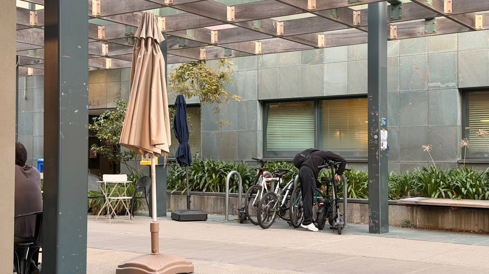
Left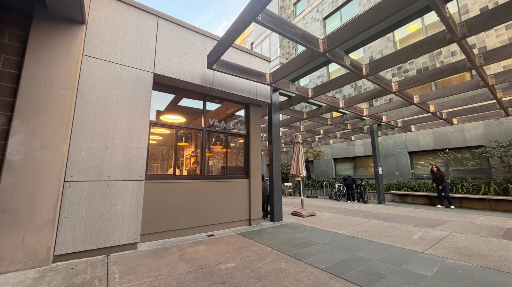
Right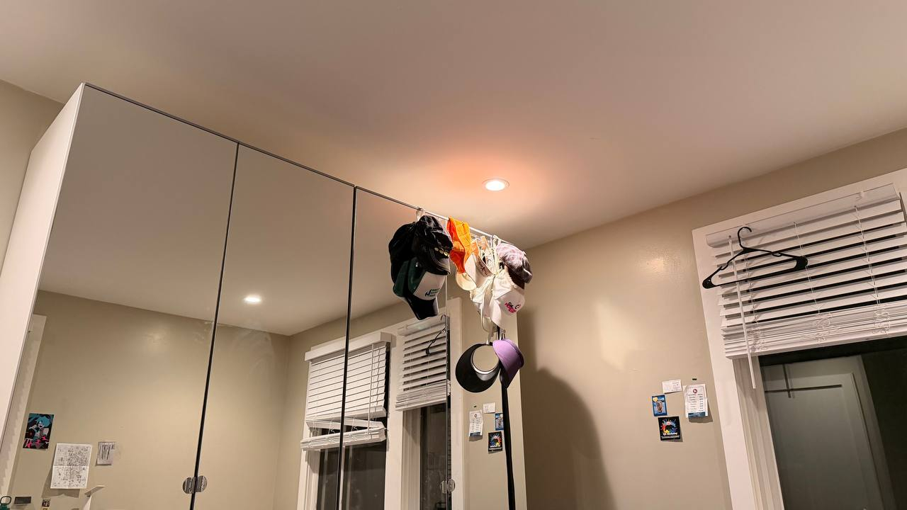
Left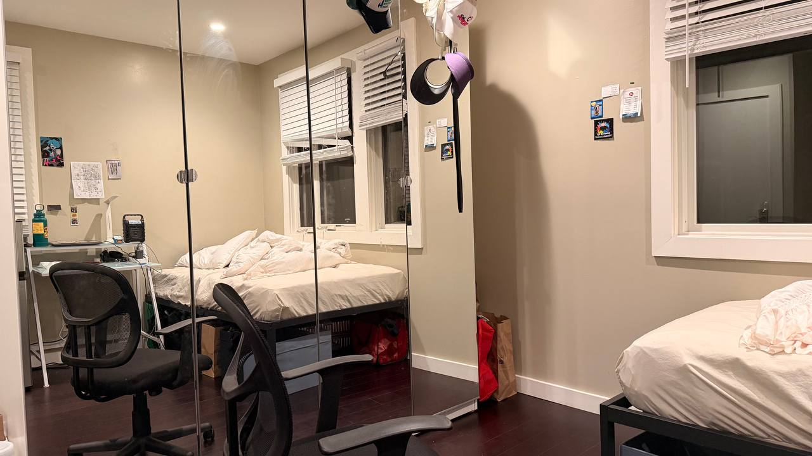
Right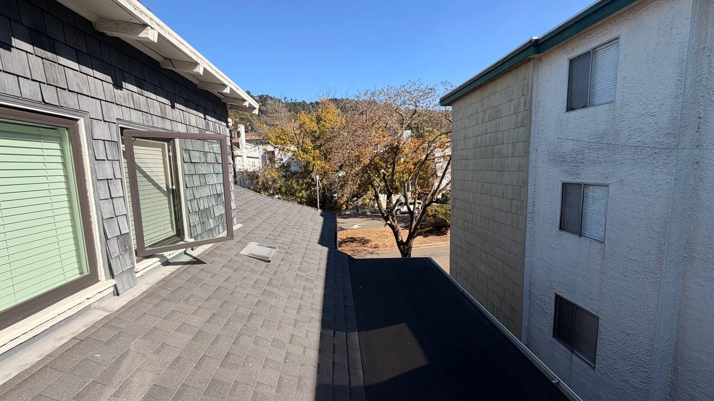
Left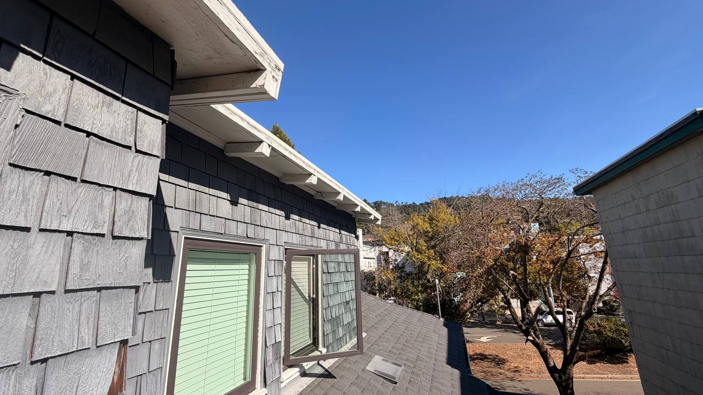
RightA homography maps a point p = (x, y, 1) in image 1 to p' = Hp in image 2, where H is 3×3
with 8 degrees of freedom (I fix H[2][2] = 1). Writing out p' = (x', y') after dividing by the third coordinate
and rearranging, each correspondence gives two linear equations in the unknowns h = [a, b, c, d, e, f, g, h]:
x*a + y*b + c - x*x'*g - y*x'*h = x'
x*d + y*e + f - x*y'*g - y*y'*h = y'
Stacking n correspondences gives Ah = b with A of size 2n×8. With
n > 4 the system is overdetermined, so I solve it with least squares (np.linalg.lstsq) to be robust to click noise.
I clicked 8 points per pair.
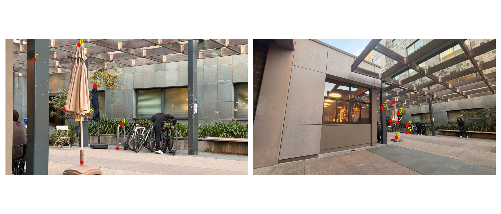
Set 1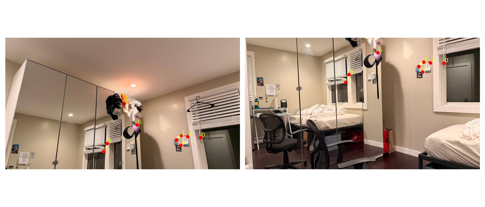
Set 2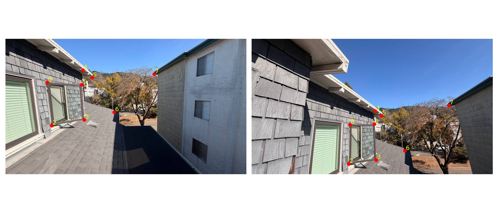
Set 3Set 1:
A = [[ 740.891 334.175 1. 0. 0. 0. -286510.924 -129229.409] [ 0. 0. 0. 740.891 334.175 1. -23248.831 -10486.276] [ 725.292 432.354 1. 0. 0. 0. -225242.196 -134269.311] [ 0. 0. 0. 725.292 432.354 1. -274318.736 -163524.368] [ 761.995 439.695 1. 0. 0. 0. -334525.199 -193031.613] [ 0. 0. 0. 761.995 439.695 1. -303582.209 -175176.53 ] [ 754.654 521.358 1. 0. 0. 0. -303604.927 -209747.582] [ 0. 0. 0. 754.654 521.358 1. -491771.846 -339744.011] [ 813.378 454.376 1. 0. 0. 0. -495899.741 -277023.593] [ 0. 0. 0. 813.378 454.376 1. -365847.865 -204372.944] [ 810.625 493.831 1. 0. 0. 0. -477857.891 -291109.942] [ 0. 0. 0. 810.625 493.831 1. -469485.495 -286009.498] [ 680.332 362.62 1. 0. 0. 0. -102660.566 -54718.535] [ 0. 0. 0. 680.332 362.62 1. -73161.001 -38995.136] [ 765.665 394.734 1. 0. 0. 0. -361428.125 -186332.326] [ 0. 0. 0. 765.665 394.734 1. -189826.984 -97864.281]] b = [386.711 31.38 310.554 378.218 439.013 398.405 402.31 651.652 609.679 449.788 589.493 579.165 150.898 107.537 472.045 247.924] H = [[ 3.644 0.041 -2327.758] [ 0.111 3.751 -1310.344] [ -0. 0.001 1. ]]
Set 2:
A = [[ 1083.142 138.734 1. 0. 0. 0. -1153318.669 -147723.056] [ 0. 0. 0. 1083.142 138.734 1. -591538.555 -75767.336] [ 973.034 133.229 1. 0. 0. 0. -931617.327 -127558.203] [ 0. 0. 0. 973.034 133.229 1. -521584.265 -71415.966] [ 1008.819 135.982 1. 0. 0. 0. -1002905.292 -135184.595] [ 0. 0. 0. 1008.819 135.982 1. -545394.668 -73515.373] [ 946.425 157.086 1. 0. 0. 0. -883562.115 -146651.853] [ 0. 0. 0. 946.425 157.086 1. -528162.328 -87663.315] [ 966.611 186.448 1. 0. 0. 0. -923693.924 -178169.461] [ 0. 0. 0. 966.611 186.448 1. -568696.12 -109694.649] [ 723.457 80.928 1. 0. 0. 0. -520070.929 -58176.614] [ 0. 0. 0. 723.457 80.928 1. -344653.095 -38553.876] [ 566.554 201.129 1. 0. 0. 0. -314744.983 -111735.629] [ 0. 0. 0. 566.554 201.129 1. -327607.988 -116302.043] [ 548.203 243.337 1. 0. 0. 0. -293483.848 -130271.84 ] [ 0. 0. 0. 548.203 243.337 1. -341643.93 -151649.175]] b = [1064.79 546.132 957.435 536.039 994.138 540.627 933.579 558.061 955.6 588.34 718.869 476.397 555.543 578.247 535.357 623.208] H = [[ 0.897 -0.357 68.394] [ 0.045 0.638 371.815] [ -0. -0. 1. ]]
Set 3:
A = [[ 520.676 456.211 1. 0. 0. 0. -115355.779 -101073.653] [ 0. 0. 0. 520.676 456.211 1. -120488.632 -105571.012] [ 650.052 452.541 1. 0. 0. 0. -262715.359 -182892.199] [ 0. 0. 0. 650.052 452.541 1. -158181.41 -110119.736] [ 513.909 664.377 1. 0. 0. 0. -126116.671 -163042.743] [ 0. 0. 0. 513.909 664.377 1. -236808.531 -306144.4 ] [ 660.145 643.732 1. 0. 0. 0. -276486.066 -269611.913] [ 0. 0. 0. 660.145 643.732 1. -284205.269 -277139.196] [ 654.124 383.947 1. 0. 0. 0. -268562.307 -157636.518] [ 0. 0. 0. 654.124 383.947 1. -108155.244 -63483.28 ] [ 688.532 408.033 1. 0. 0. 0. -316805.044 -187742.864] [ 0. 0. 0. 688.532 408.033 1. -141642.438 -83939.184] [ 813.263 595.56 1. 0. 0. 0. -469712.106 -343974.447] [ 0. 0. 0. 813.263 595.56 1. -316545.742 -231809.326] [ 1046.382 352.98 1. 0. 0. 0. -826140.871 -278684.961] [ 0. 0. 0. 1046.382 352.98 1. -196055.555 -66136.099]] b = [221.55 231.408 404.145 243.337 245.407 460.799 418.826 430.519 410.568 165.344 460.116 205.716 577.565 389.229 789.522 187.365] H = [[ 1.683 -0.047 -563.37 ] [ 0.242 1.214 -402.559] [ 0.001 -0. 1. ]]
I implemented warpImageNearestNeighbor(im, H) and warpImageBilinear(im, H) with inverse warping.
The output bounding box is found by pushing the four image corners through H. Then for each output pixel I apply
H-1 to find where it came from in the source image, and sample there. Pixels that map outside the source are left empty and
tracked in an alpha mask. Nearest neighbor rounds to the closest pixel. Bilinear takes the weighted average of the four surrounding pixels.
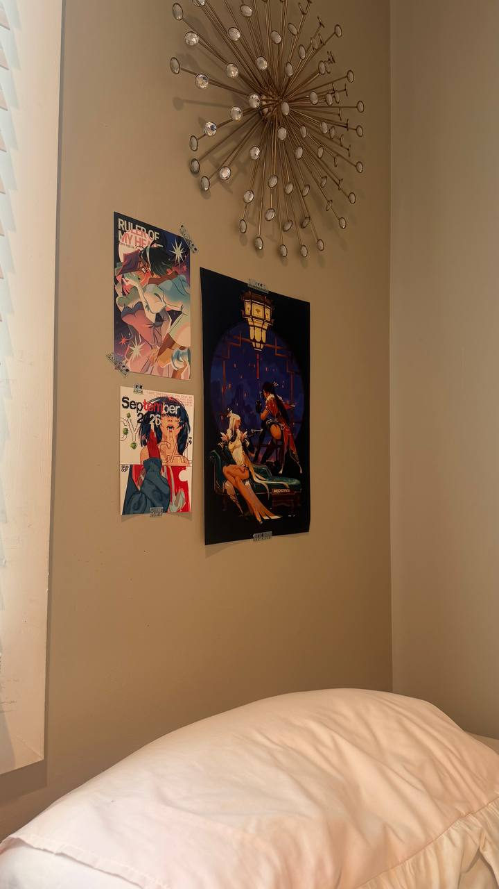
Original (with clicked corners)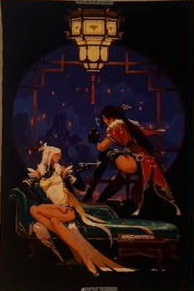
Nearest neighbor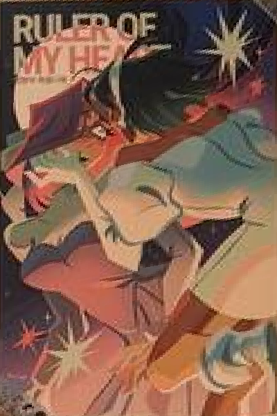
Nearest neighbor| Nearest neighbor | Bilinear | |
|---|---|---|
| Time (s) | 0.032s | 0.076s |
Nearest neighbor is faster and simple, but it produces jagged, aliased edges, especially along diagonal lines and after heavy magnification. Bilinear is slightly slower because it reads four pixels and blends them per output pixel, but the result is visibly smoother.
Procedure. I pick one image as the reference and compute a homography from each other image into the reference frame using my
computeH. I then compute the final canvas size from all of the warped image corners and warp every image into that canvas
in one shot with bilinear inverse warping. To avoid hard seams, I blend using weights from the distance transform: each pixel's weight is
its distance to the nearest edge of its source image (normalized to 0-1), so weight falls off toward the borders. I use a two-band blend:
low frequencies (Gaussian blurred, σ=15) are combined with the weighted average, while high frequencies
are taken from whichever image has the largest weight at that pixel. This reduces ghosting of fine details while keeping smooth transitions.
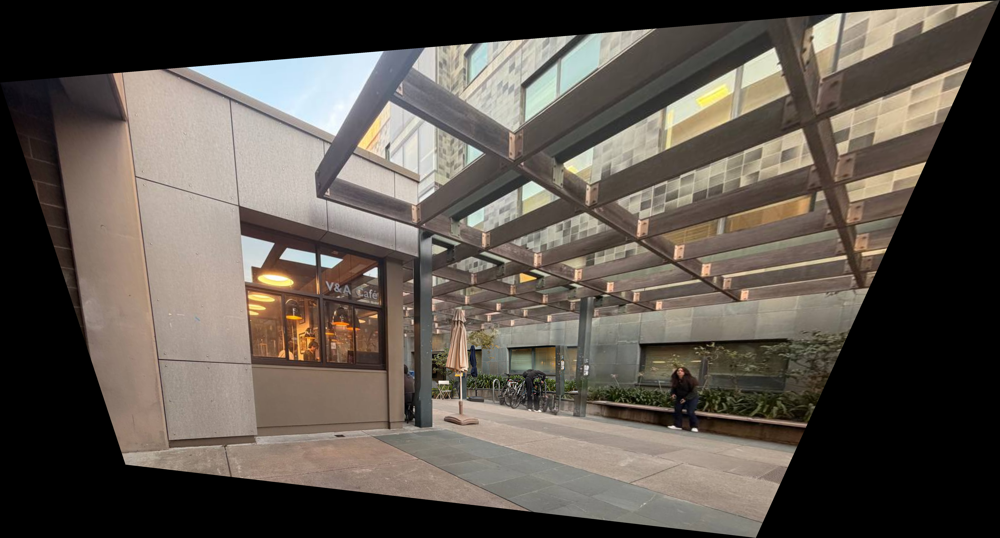
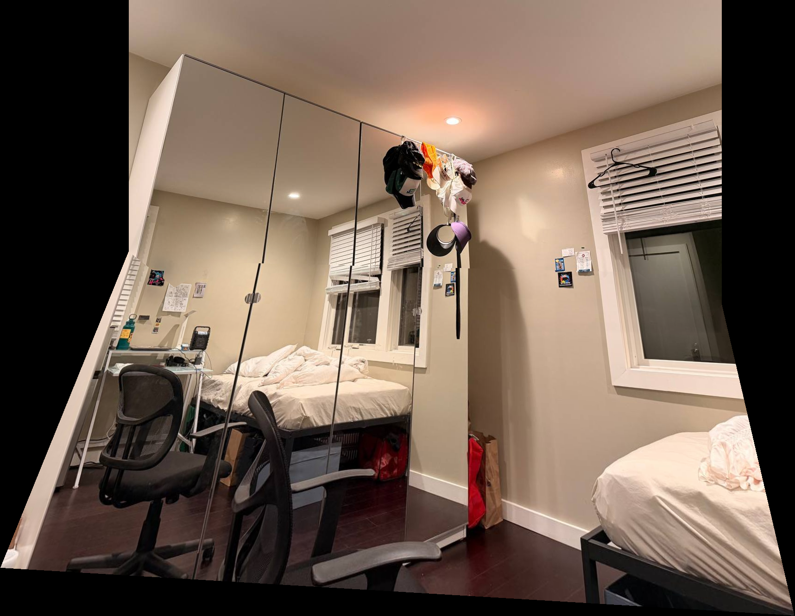
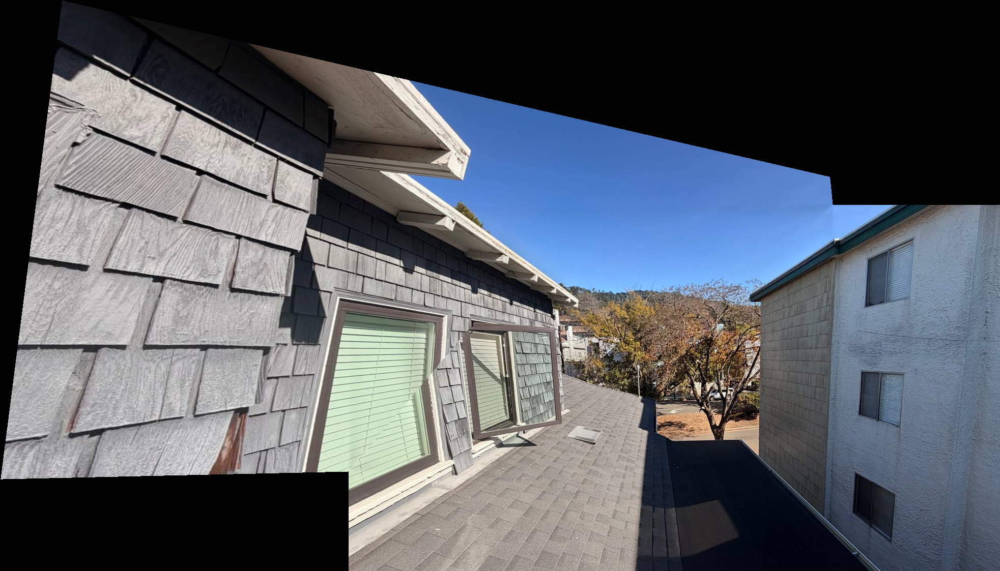
One thing I noticed was the sensitivity of the homography to click accuracy. It was very difficult to click the points at pixel perfect accuracy, resulting in artifacts in the final output.